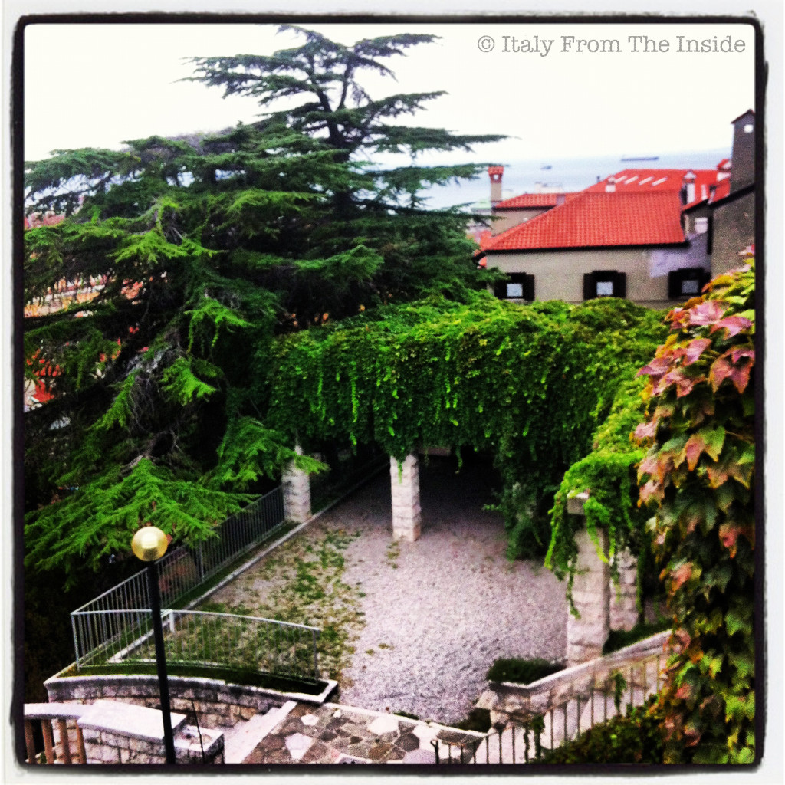

In 1953, when Triest was still under the government of the Anglo-American troops, the Giardino di Via San Michele, a unique park made of terraces, stairways and statues, was inaugurated. Today it is a peaceful place from where you can either enjoy a fantastic view of the sea or read a book under the lush pergola.